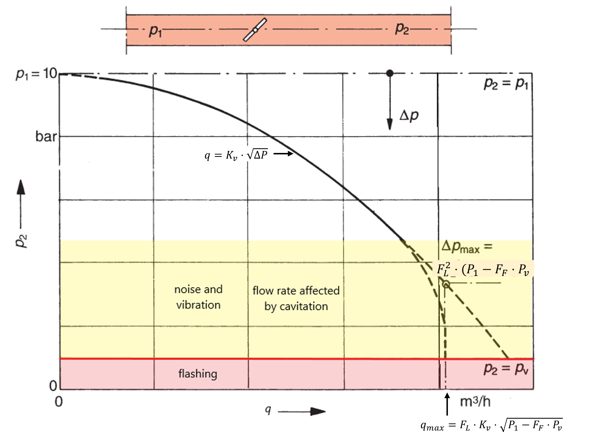
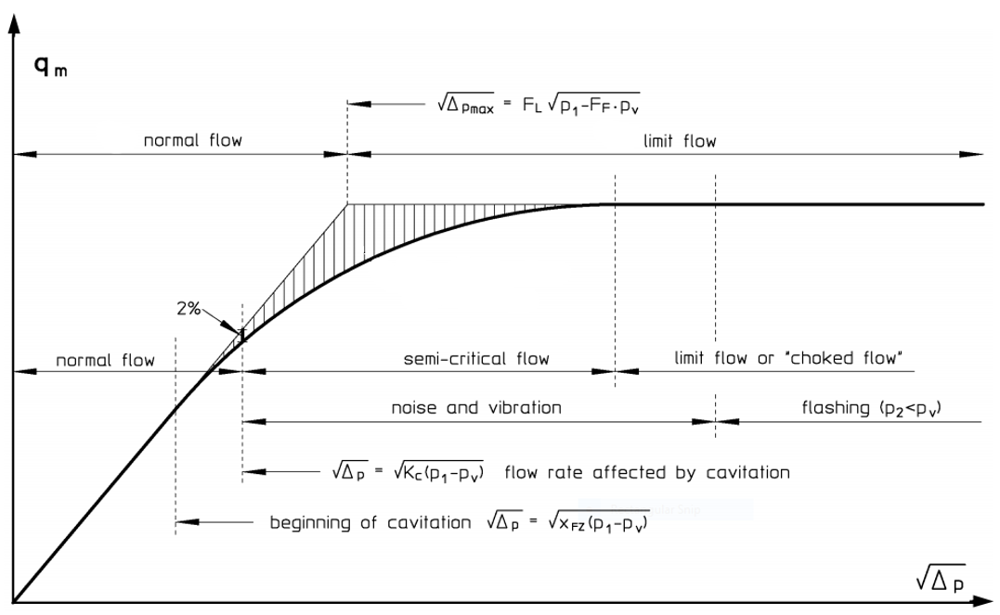

Considerations for Evaluating Control Valve Cavitation
Flow with flow restriction without pipe fittings
Essential features of the \(K_v\) value calculation
In many applications, the flow through the control valve is determined by reducers or other accessories (orifice plates) attached to the control valve. When cavitation occurs in a valve, the flow is further limited by the evaporation of the liquid in the valve. Therefore, to determine the flow through the control valve, the following should be analyzed:
- Flow without flow restriction, turbulent flow and no cavitation.
- Flow with flow restriction but without pipe fittings
- Flow with flow restriction and with pipe fittings
In this blog, only points 1. and 2. are considered. Flow with flow restriction and fittings will be considered in the following blog.
Flow without flow restriction, turbulent flow and no cavitation.
\[ Q = K_v \cdot F_R \cdot \sqrt{\frac{\Delta P}{(\rho_{1}/\rho_{0})}} \approx K_v \cdot \sqrt{\Delta P} \]
Where:
- \(Q\) is the flow; Unit: \(m^3/s\)
- \(F_R\) Reynolds number factor; Unit: Dimensionless. For turbulent flow, \(F_R = 1\)
- \(\rho_{1}/\rho_{0}\) Relative density (\(\rho_{1}/\rho_{0} = 1.0\) for water at \(15°C\)); Unit: Dimensionless
- \(\Delta P\) Differential pressure between upstream and downstream pressure taps \((P_1-P_2)\); Unit: bar
Flow with flow restriction (Cavitation) without pipe fittings
The vapor pressure of liquids depends on the temperature. If the static pressure on the fluid falls below this vapor pressure, evaporation occurs. The lowest pressure occurs when throttling in the valve occurs in the so-called “vena contracta.” Depending on the design of the throttle point, there is a greater or lesser pressure recovery. Under certain circumstances, evaporation must also be considered when the outflow pressure \(P_2\) is greater than the vapor pressure of the liquid. Local evaporation, in the vena contracta, initially increases in volume. The cross-section of the choke becomes slimmer, and the calculated flow rate may not be reached if evaporation is not taken into account in the calculation. Cavitation occurs when the pressure increases and reverses evaporation. When the evaporation is reversed (condensation) and reaches a particular energy potential, it can quickly damage the throttle body and seat of the valve. The continuity of the flow coefficient is interrupted when cavitation occurs, and the dynamic interaction between flow and its restriction is affected. Additionally, cavitation increases the compressibility of the fluid locally and reduces the flow. The density of the water, too, is drastically reduced by the bubble volume in the restriction area as the pressure ratio rises [@wagner2008].
The critical pressure is reached at the vena contracta at the differential pressure \(\Delta{P}_{max}\), below the vapor pressure.The maximum allowable differential pressure for the calculation of control valves without fittings can be calculated as follows:
\[ \Delta{P}_{max}=F^{2}_{L} \cdot (P_1-F_F \cdot p_v) \]
The flow rate before cavitation starts is:
\[ Q = K_v \cdot F_R \cdot \sqrt{\frac{\Delta P}{(\rho_{1}/\rho_{0})}} \]
So:
\[ Q_{max(L)} = K_v \cdot F_L \cdot F_R \cdot \sqrt{\frac{(P_1-F_F \cdot P_v)}{(\rho_{1}/\rho_{0})}} \]
Where:
- \(Q\) is the flow; Unit: \(m^3/s\)
- \(F_L\) Liquid pressure recovery factor of a control valve without attached fittings. The value \(F_L\) provided by the manufacturer refers to the value when the control valve is fully open. Unit: Dimensionless
- \(F_R\) Reynolds number factor; Unit: Dimensionless. For turbulent flow, \(F_R = 1\)
- \(F_F\) Liquid critical pressure ratio factor; Unit: Dimensionless 1
- \(P_v\) Absolute vapor pressure of the liquid at inlet temperature ; Unit: bar
- \(\rho_{1}/\rho_{0}\) Relative density (\(\rho_{1}/\rho_{0} = 1.0\) for water at \(15°C\)); Unit: Dimensionless
- \(\Delta P\) Differential pressure between upstream and downstream pressure taps; Unit: bar
The above functions, for the valve in a position \(x\%\) (for example, \(100\%\) open), can be represented in the following two ways:


Liquid pressure recovery factor \(F_L\) : is a number used to describe the ratio between the pressure recovery after the Vena-Contracta and the pressure drop at the Vena-Contracta. in other words; It represents the pressure recovered between the Vena-Contracta and the valve outlet.
It is also essential to understand that \(F_L\) is not a cavitation parameter. It is a choked flow parameter, and its only use is to determine the theoretical blocked flow point.
Cavitation Levels
An analytical solution to the problem of cavitation is not easy. Emphasis has, by necessity, been concentrated on laboratory experiments to explore physics, develop instrumentation to measure cavitation, and develop empirical relationships for predicting various cavitation levels. Therefore, based on laboratory and field experience, valve manufacturers should be able to recommend which cavitation level2 is appropriate for their valve for a specific application [@Tuli].
If the valve manufacturer’s recommended cavitation levels exceed the maximum3, the \(\sigma_{mv}\) should be the maximum acceptable value and should only be overtaken in emergencies for the short term.
As seen in Figure 1 and Figure 2, the liquid pressure recovery factor \(F_L\) acquired experimentally, with a theoretical model or a numerical model (CFD4) can be used to quantify flow conditions in locked cavitation (maximum cavitation level).
\[ \sigma_{mv} = \frac{1}{F^{2}_{L}} = \frac{(P_1-F_F \cdot p_v)}{\Delta{P}_{max}} \]
The Incipient cavitation levels \(\sigma_{i}\) and The constant cavitation \(\sigma_{c}\) are also defined, where \(X_{FZ}\) and \(X_{C}\) are the respective coefficients:
\[ \sigma_i = \frac{1}{X_{FZ}^2} = \frac{(P_1 - P_v)}{\Delta P} \] \[ \sigma_c = \frac{1}{X_{C}^2} = \frac{(P_1 - P_v)}{\Delta P} \] \(K_C\) specifies where cavitation begins to appear in a flow of water through the valve with such intensity that, under constant upstream conditions, the flow rate deviation from linearity vs. \(\sqrt{\Delta P}\) reaches the \(2\%\) (see Figure 2). Such an assumption is only adequate when the diagram of the actual flow rate versus \(\sqrt{\Delta P}\), under constant upstream conditions, shows a sharp break point between the linear and horizontal zones. A simple form of calculation of the \(K_C\) is the following formula [Handbook for Control Valve Sizing - Parcol]:
\[ K_C = 0.80 \cdot F_L^2 \] then the coefficient of proportionality between \(K_{FZ}\) and \(F_L^2\) can come down to \(0.65\), so:
The beginning cavitation coefficient can be extrapolated from the curve in Figure 2. A first approximation value would be:
\[ K_{FZ} = 0.592 \cdot F_L^2 \]
In this way, all cavitation limits can be represented as a function of \(F_L\).
The values of \(F_L\), \(K_C\), and \(K_{FZ}\) must be verified with Experimentation, Theoretical Models, and Numerical Models like CFD.
The transition between the zero cavitation zone and choked flow can be represented mathematically as a Vertical Parabolic curve. Vertical curves provide gradual change between two adjacent steep grade lines. The curve used to connect the two adjacent grades is a parabola. We will see these calculations in a future Blog.
References
- Wagner, Walter. Regel- und Sicherheitsarmaturen. 1. Aufl. dieser Ausg, Vogel, 2008.
- Handbook for Control Valve Sizing - Parcol. TECHNICAL BULLETIN 1-ITECHNICAL BULLETIN 1-I.
- Tullis, J. P. Cavitation Guide for Control Valves. NUREG/CR-6031, Nuclear Regulatory Commission, Washington, DC (United States). Div. of Engineering; Tullis Engineering Consultants, Logan, UT (United States), 1 Apr. 1993, https://doi.org/10.2172/10155405.
- Parabolic Curve | Surveying and Transportation Engineering Review at MATHalino. https://mathalino.com/reviewer/surveying-and-transportation-engineering/parabolic-curve. Accessed 25 Oct. 2022.
- ANSI/ISA, editor. ANSI/ISA-75.01.01-2007, Flow Equations for Sizing Control Valves. ISA, 2007.
- British Standard, editor. BS EN 60534-1:2005. Control Valve Terminology and General Considerations. 2005.
- ANSI/ISA, editor. ANSI/ISA-RP75.21, Process Data Presentation for Control Valves. Instrument Society of America, 1996.
- ANSI/ISA, editor. ANSI/ISA–RP75.23–1995, Considerations for Evaluating Control Valve Cavitation. Instrument Society of America, 1995.
- American National Standards Institute, and Instrument Society of America. Flow Equations for Sizing Control Valves: Standard. 1985.
- ANSI/ISA. ANSI/ISA-75.11-1985 (R1996) , Inherent Flow Characteristic and Rangeability of Control Valves. 1985.
Footnotes
Liquid critical pressure ratio factor, abbreviated as \(F_F\), a dimensionless number, is the ratio between pressure in vena contracta and the pressure at the maximum effective choke pressure drop across the valve. \(F_F = 0.96 - 0.28 \cdot \sqrt{\frac{P_v}{221.2}}\)↩︎
Manufacturer’s recommended cavitation limit \(\sigma_{mr}\)↩︎
Maximum noise and vibration level \(\sigma_{mv}\)↩︎